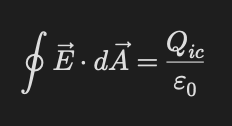
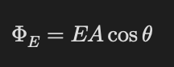

Gauss Yasası
Temel Mantık
Gauss yasası elektrik alanı simetri kullanarak kolay bulmamızı sağlar.
Kapalı bir yüzeyden geçen toplam elektrik akısı:
içerideki toplam yükle ilişkilidir.
Gauss Yasası

- Qᵢç → yüzeyin içindeki toplam yük
- ε₀ → boşluğun geçirgenliği
Elektrik Akısı
Akı, alan çizgilerinin yüzeyden geçme miktarıdır.

- Alan yüzeye dikse akı maksimum olur.
- Paralelse akı sıfır olur.
Gaussian Yüzey
Hayali kapalı yüzeydir.
Simetriye göre seçilir:
- küre
- silindir
>- düzlemsel kutu
İletkenlerde Gauss
Elektrostatik dengede:
iletken içinde elektrik alan sıfırdır.
Fazla yükler yüzeyde bulunur.
Soru Çözme Taktiği
- Simetriyi belirle.
- Uygun Gaussian yüzeyi seç.
- E alanının sabit olduğu bölgeleri kullan.
- Akı integralini sadeleştir.
- İçerideki yükü dikkatli hesapla.
Sık Yapılan Hatalar
- İçeride olmayan yükleri hesaba katmak
- Gaussian yüzeyi gerçek cisim sanmak
- Alanın her yerde aynı olduğunu düşünmek
- λ, σ ve ρ yoğunluklarını karıştırmak
- Alan yönünü yanlış almak